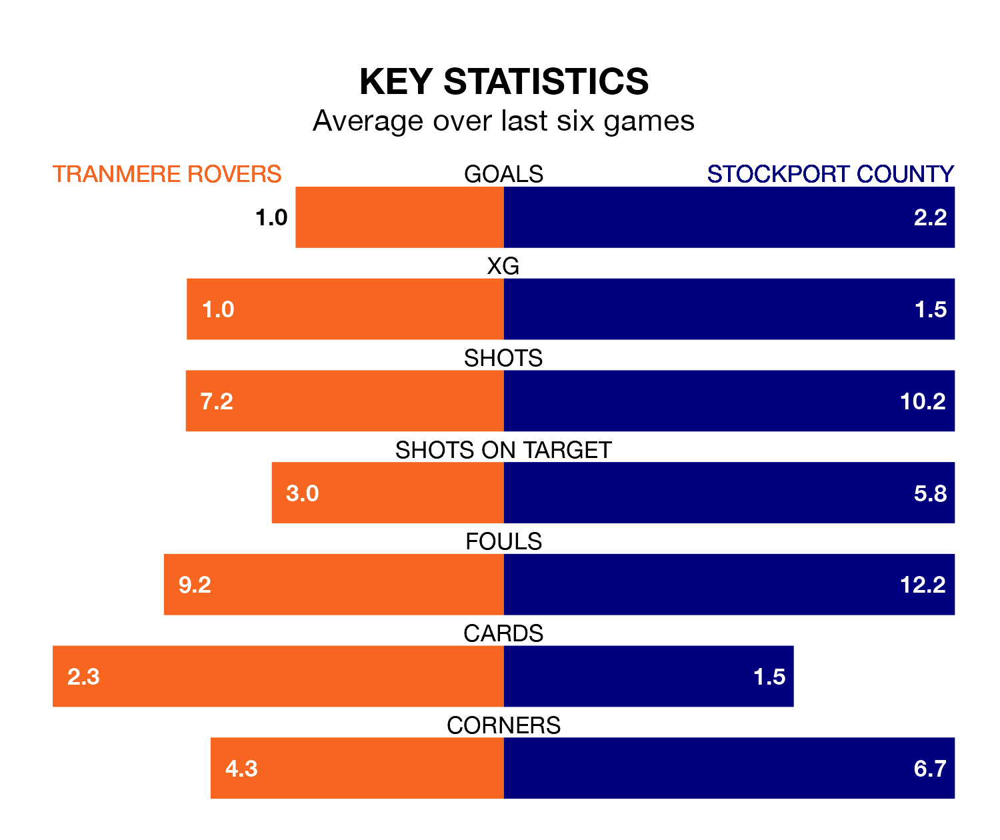

Stockport County travel to Prenton Park for Saturday's match against Tranmere Rovers looking to bounce back from defeat last time out in EFL League Two.
The Hatters, who sit top of the league after 31 games, fell to a 3-1 home defeat to Crewe Alexandra on Tuesday.
They face a Tranmere side who also lost their last match, a 3-2 defeat to Morecambe, and who sit 18th in the table.
With 66 goals in 31 games so far this season, Stockport are the league's highest scorers with 2.1 goals per game. And they are conceding fewer than average, letting in 33 goals at a rate of 1.1 per game.
Tranmere, meanwhile, are average scorers, with 1.5 goals per game. They have also conceded 1.5 goals per game.
In Ben Hinchiffe, County can rely on one of the league's safest pair of hands. He has kept 10 clean sheets in his 31 appearances this season, and only two other 'keepers – Mansfield Town's Christy Pym and AFC Wimbledon's Alex Bass – have been able to prevent the opposition scoring on more occasions in EFL League Two.
In Rovers' net, Luke McGee has five clean sheets in 31 games. He has conceded a goal every 67 minutes, 30% more often than the 90 minutes between goals for Hinchiffe.
The hosts are in bad form in EFL League Two, with one win and a draw from their last six games.
With three wins and a draw over that period, the Hatters' form is much better – they have taken 10 points from 18, compared to Tranmere's four.
In the last three years, Tranmere and Stockport have played each other on three occasions. Stockport won two of them and they drew once.
Their last meeting was on October 28, when Stockport won 2-0 at home.
Saturday's match will be refereed by Alex Chilowicz, who has taken charge of five EFL League Two games so far this season, issuing no red cards and booking 21 players. He has not awarded any penalties.
He is yet to oversee a match featuring either Tranmere or Stockport this season.
Updated: 13:04 (UTC), 16/02/24